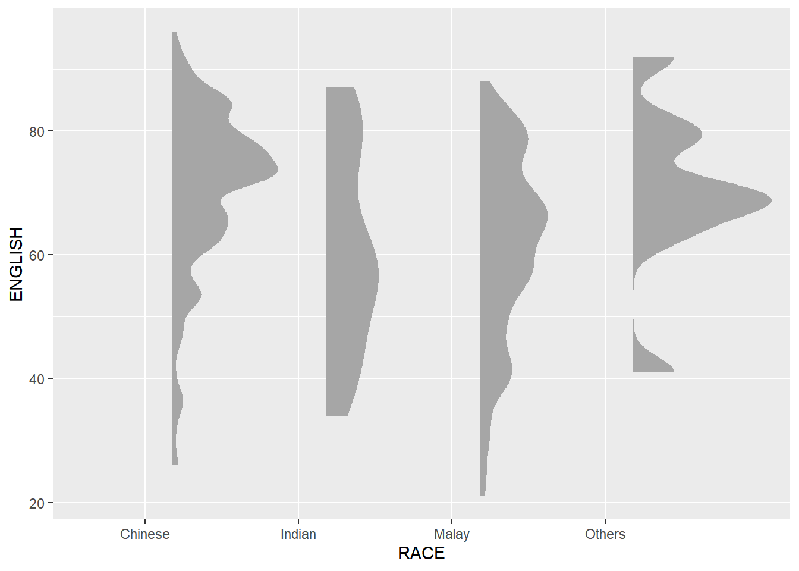

Show Code
pacman::p_load(ggdist, ggridges, ggthemes,
colorspace, tidyverse, patchwork)Visualising distribution is not new in statistical analysis. The popular statistical graphics methods for visualising distribution, such as histogram, probability density curve (pdf), boxplot, notch plot and violin plot, and how they can be created using ggplot2 can be found in Hands-On Exercise 1. In this exercise will focus on two relatively new statistical graphic methods for visualising distribution, namely ridgeline plot and raincloud plot using ggplot2 and its extensions.
The following R packages will be used for this exercise:
The code chunk below will be used to load these R packages into the RStudio environment.
pacman::p_load(ggdist, ggridges, ggthemes,
colorspace, tidyverse, patchwork)For the purpose of this exercise, Exam_data.csv will be used.
In the code chunk below, read_csv() of readr package is used to import Exam_data.csv into R and saved it into a tibble data.frame.
exam <- read_csv("data/Exam_data.csv")Ridgeline plot (sometimes called Joyplot) is a data visualisation technique for revealing the distribution of a numeric value for several groups. Distribution can be represented using histograms or density plots, all aligned to the same horizontal scale and presented with a slight overlap.
The figure below is a ridgelines plot showing the distribution of English scores by class.
ggplot(exam,
aes(x = ENGLISH,
y = CLASS)) +
geom_density_ridges(
scale = 3,
rel_min_height = 0.01,
bandwidth = 2.5,
) +
scale_x_continuous(
name = "ENGLISH",
expand = c(0,0),
) +
scale_y_discrete(name = "CLASS", expand = expansion(add=c(0.2, 2.6))) +
theme_ridges()Ridgeline plots make sense when the number of group to represent is medium to high, and thus a classic window separation would take too much space. Indeed, the fact that groups overlap each other allows for more more efficient space usage. If you have less than 5 groups, dealing with other distribution plots is probably better.
It works well when there is a clear pattern in the result, like if there is an obvious ranking in groups. Otherwise group will tend to overlap each other, leading to a messy plot that does not provide any insight.
There are several ways to plot ridgeline plots with R. In this section, the ggridges package will be used to plot ridgeline plots.
ggridges package provides two main geom to plot ridgeline plots. They are: grom_ridgeline() and geom_density_ridges(). The former takes height values directly to draw the ridgelines, and the latter first estimates data densities and then draws those using ridgelines.
The ridgeline plot below is plotted by using geom_density_ridges().
ggplot(exam,
aes(x = ENGLISH,
y = CLASS)) +
geom_density_ridges(
scale = 3,
rel_min_height = 0.01,
bandwidth = 3.4,
fill = lighten("#7097BB", .3),
color = "white"
) +
scale_x_continuous(
name = "English grades",
expand = c(0, 0)
) +
scale_y_discrete(name = "CLASS", expand = expansion(add = c(0.2, 2.6))) +
theme_ridges()Sometimes we would like to have the area under a ridgeline not filled with a single solid colour but rather with colours that vary in some form along the x axis. This effect can be achieved by using either geom_ridgeline_gradient() or geom_density_ridges_gradient().
Both geoms work just like geom_ridgeline() and geom_density_ridges(), except that they allow for varying fill colours. However, they do not allow for alpha transparency in the fill. For technical reasons, it can either be changing fill colours or transparency but not both.
The available colours are “A” to “H”.
ggplot(exam,
aes(x = ENGLISH,
y = CLASS,
fill = stat(x))) +
geom_density_ridges_gradient(
scale = 3,
rel_min_height = 0.01) +
scale_fill_viridis_c(name = "Temp. [F]",
option = "C") + # Available options are A to H
scale_x_continuous(name = "English grades",
expand = c(0,0)
) +
scale_y_discrete(name = "CLASS", expand = expansion(add = c(0.2, 2.6))) +
theme_ridges() +
ggtitle('Plasma')Besides providing additional geom objects to support the need to plot ridgeline plot, ggridges package also provides a stat function called stat_density_ridges() that replaces stat_density() of ggplot2.
Figure below is plotted by mapping the probabilities calculated by using stat(ecdf) which represent the empirical cumulative density function for the distribution of English score.
ggplot(exam,
aes(x = ENGLISH, y = CLASS,
fill = 0.5 - abs(0.5-stat(ecdf)))) +
stat_density_ridges(geom="density_ridges_gradient",
calc_ecdf = TRUE) +
scale_fill_viridis_b(name = "Tail probability",
direction = -1) +
theme_ridges() ggplot(exam,
aes(x = ENGLISH, y = CLASS,
fill = 0.5 - abs(0.5-stat(ecdf)))) +
stat_density_ridges(geom="density_ridges_gradient",
calc_ecdf = TRUE) +
scale_fill_viridis_c(name = "Tail probability",
direction = -1) +
theme_ridges() By using geom_density_ridges_gradient(), we can colour the ridgeline plot by quantile, via the calculated stat(quantile) aesthetic as shown in the first figure below.
Or, instead of using number to define the quantiles, we can also specify quantiles by cutting points such as 2.5% and 97.5% tails to colour the ridgeline plot, shown in the second figure below.
ggplot(exam,
aes(x = ENGLISH,
y = CLASS,
fill = factor(stat(quantile)))) +
stat_density_ridges(
geom = "Density_ridges_gradient",
calc_ecdf = TRUE,
quantiles = 4,
quantile_lines = TRUE) +
scale_fill_viridis_d(name = "Quantiles") +
theme_ridges()ggplot(exam,
aes(x = ENGLISH,
y = CLASS,
fill = factor(stat(quantile)))) +
stat_density_ridges(
geom = "density_ridges_gradient",
calc_ecdf = TRUE,
quantiles = c(0.025, 0.975)
) +
scale_fill_manual(
name = "Probability",
values = c("#FF0000A0", "#A0A0A0A0", "#0000FFA0"),
labels = c("(0, 0.025]", "(0.025, 0.975]", "(0.975, 1]")
) +
theme_ridges()Raincloud Plot is a data visualisation techniques that produces a half-density to a distribution plot. It gets the name because the density plot is in the shape of a “raincloud”. The raincloud (half-density) plot enhances the traditional boxplot by highlighting multiple modalities (an indicator that groups may exist). The boxplot does not show where densities are clustered, but the raincloud plot does!
In this section, a raincloud plot will be created to visualise the distribution of English score by Race. It will be created by using functions provided by ggdist and ggplot2 packages.
First, a Half-Eye graph will be plotted by using stat_halfeye() of ggdist package.
This produces a Half Eye visualisation, which contains a half-density and a slab-interval.
ggplot(exam,
aes(x = RACE,
y = ENGLISH)) +
stat_halfeye(adjust = 0.5,
justification = -0.2)ggplot(exam,
aes(x = RACE,
y = ENGLISH)) +
stat_halfeye(adjust = 0.5,
justification = -0.2,
.width = 0,
point_colour = NA)
The slab interval was removed by setting .width = 0 and point_colour = NA.
geom_boxplot()Next, the second geometry layer will be added using geom_boxplot() of ggplot2. This produces a narrow boxplot. The width will be reduced and the opacity will be adjusted.
But it seems that opacity of boxplot cannot be adjusted using alpha.
ggplot(exam,
aes(x = RACE,
y = ENGLISH)) +
stat_halfeye(adjust = 0.5,
justification = -0.2,
.width = 0,
point_colour = NA) +
geom_boxplot(width = 0.2,
outlier.shape = NA)
stat_dotsNext, the third geometry layer will be added using stat_dots() of ggdist package. This produces a half-dotplot, which is similar to a histogram that indicates the number of samples (number of dots) in each bin. We select side = “left” to indicate we want it on the left-hand side.
ggplot(exam,
aes(x = RACE,
y = ENGLISH)) +
stat_halfeye(adjust = 0.5,
justification = -0.2,
.width = 0,
point_colour = NA) +
geom_boxplot(width = 0.2,
outlier.shape = NA) +
stat_dots(side = "left",
justification = 1.2,
binwidth = .5,
dotsize = 2)Lastly, coord_flit() of ggplot2 package will be used to flip the raincloud chart horizontally to give it the raincloud appearance. At the same time, theme_economist() of ggthemes package is used to give the raincloud chart a professional publishing standard look.
ggplot(exam,
aes(x = RACE,
y = ENGLISH)) +
stat_halfeye(adjust = 0.5,
justification = -0.2,
.width = 0,
point_colour = NA) +
geom_boxplot(width = 0.2,
outlier.shape = NA) +
stat_dots(side = "left",
justification = 1.2,
dotsize = 1.5) +
coord_flip() +
theme_economist()ggplot(exam,
aes(x = RACE,
y = ENGLISH)) +
stat_halfeye(adjust = 0.5,
justification = -0.2,
.width = 0,
point_colour = NA) +
geom_boxplot(width = 0.2,
outlier.shape = NA) +
stat_dots(side = "left",
justification = 1.2,
binwidth = .5,
dotsize = 1.5) +
coord_flip() +
theme_economist()The bin width is an important variable and resulted in the first graph having points clipped out due to coord_flip(). This can be left empty to let the graph decide automatically.